访问操作系统对象：文件描述符与管道
课程：2026 春季学期《操作系统原理》，第 7 讲
讲师：蒋炎岩（jyy）
官方课程主页：https://jyywiki.cn/OS/2026/
官方讲义：https://jyywiki.cn/OS/2026/lect7.md
视频来源：Bilibili BV1QFQmB7EQD
版权说明：课程讲义与幻灯片归蒋炎岩所有，采用 Creative Commons BY-NC 4.0 许可；本电子书是对课堂讲授的书面化重构，保留出处与许可说明。
导语：进程之外还有一整个世界
前几讲解决了进程自身的两个核心问题：
- 生命周期：
fork、execve、exit； - 地址空间：
mmap、munmap、mprotect。
但进程不能只读写自己的内存。只要它要：
- 读取网络请求；
- 写入文件；
- 打开终端；
- 和其他进程交换数据；
- 使用打印机、GPU、键盘等设备；
它就必须访问操作系统中的其他对象。
应用开发者关心“我想做什么”，操作系统设计者关心“提供什么样的通用机制，让所有应用都能自行组合出所需功能”。
UNIX 给出的核心答案是：
Everything is a File。
文件描述符则是应用程序用来访问这些操作系统对象的指针。
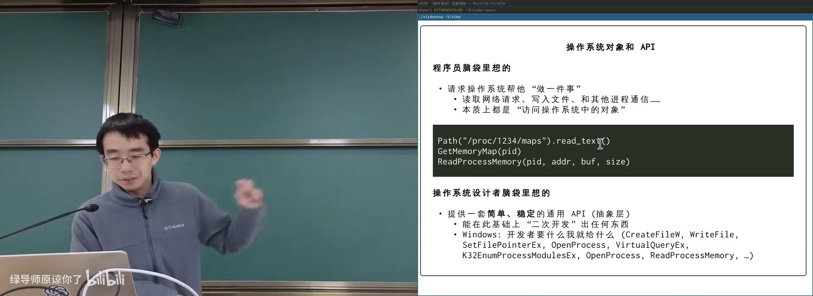
📷 操作系统对象与通用 API
回到原视频 (00:11:39)
1. 实验、Git 与 AI 辅助工作流
(参考时间: 00:00:05)
课程实验框架在 3 月 22 日更新过，一度出现“新框架搭配旧 TestKit”的版本问题。解决方式不是记死 Git 命令，而是理解目标：
- 查看提交历史；
- 暂时回退一个 commit；
- 从远端同步更新；
- 将更新合并回本地。
Agent 可以根据目标自动组合 git log、git reset、git fetch、git merge 等命令。
flowchart LR
P["明确目标"] --> A["Coding Agent"]
A --> G1["git log"]
G1 --> G2["git reset"]
G2 --> G3["git fetch"]
G3 --> G4["git merge"]
G4 --> R["同步完成"]
重点不是要求每个人背住命令，而是建立“哪件事能够做到”的概念，再让 AI 放大人的自主性。
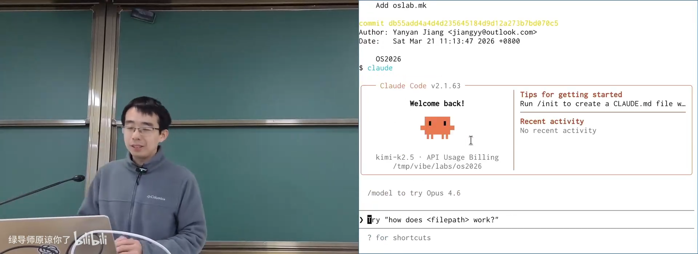
📷 使用 Agent 查看提交历史并回退版本
回到原视频 (00:03:27)
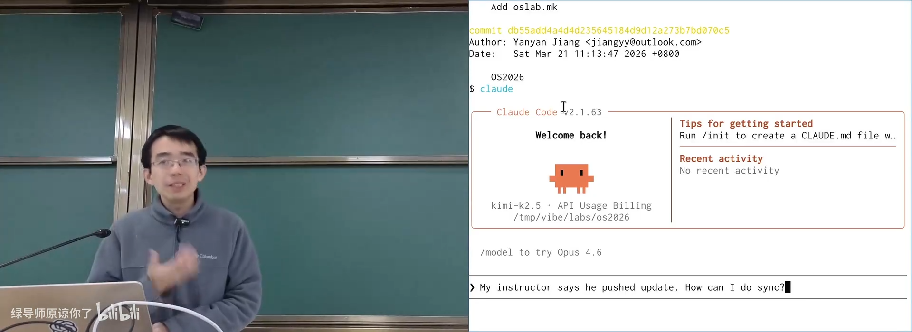
📷 同步远端 TestKit 更新
回到原视频 (00:05:16)
2. 进程是一个封闭世界
(参考时间: 00:07:02)
进程自己的资源只有寄存器和地址空间。除此之外的一切访问都要经过系统调用：
flowchart TD
P["进程内部"] --> C["CPU 寄存器"]
P --> M["地址空间"]
P --> S["System Call"]
S --> O["操作系统对象"]
O --> F["文件"]
O --> D["设备"]
O --> N["网络连接"]
O --> I["进程间通信对象"]
操作系统经过几十年演化，已经定义了大量对象：
- 文件与目录；
- 管道和 FIFO；
- 套接字；
- 终端与伪终端；
- GPU、输入设备、块设备；
- 信号与锁；
- 共享内存；
- 进程与线程。
问题在于：操作系统不可能为每一种对象单独发明完全不同的编程模型。它需要一种统一、稳定、可复用的抽象。
3. 从程序员意图到操作系统机制
3.1 程序员想表达的是对象操作
应用开发者更希望写出接近自然语言的接口：
Path("/proc/1234/maps").read_text()
memory_map = GetMemoryMap(pid)
ReadProcessMemory(pid, address, buffer, size)
而不是每次都直接使用一系列底层系统调用。
3.2 操作系统提供通用机制
UNIX 没有为 GetMemoryMap 发明专门的系统调用，而是把进程信息放进：
/proc/<pid>/maps
/proc/<pid>/mem
应用只需复用已经存在的文件 API：
open();
read();
write();
Windows 选择了另一种设计：
CreateFileWWriteFileSetFilePointerExOpenProcessVirtualQueryExReadProcessMemory
它为开发者提供更直接的专用 API，能够更高效地把结构体信息交给应用。
flowchart LR
U["UNIX"] --> UF["统一文件 API"]
UF --> P["procfs / devfs / 普通文件"]
W["Windows"] --> WA["对象专用 API"]
WA --> K["内核对象"]
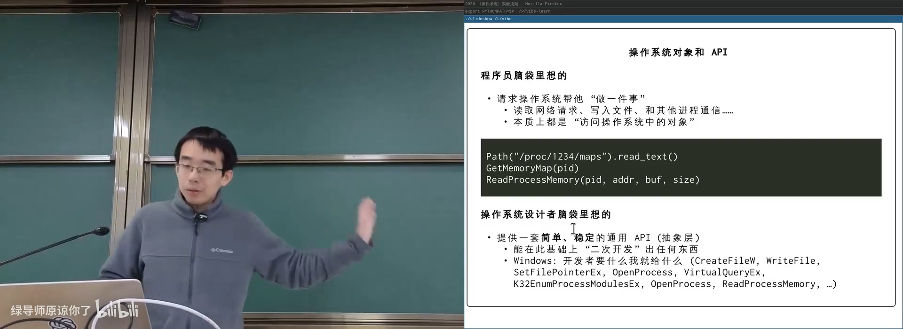
📷 UNIX 统一文件抽象与 Windows 专用 API 的对比
回到原视频 (00:15:29)
4. Everything is a File
4.1 什么是文件？
最朴素的解释是：
一个有名字的数据对象，表现为可读写、可定位的字节序列。
文件模型非常通用，因为数据流、数组、图片、文本、日志都可以表示成字节序列。
flowchart LR
F["文件"] --> B["有名字的字节序列"]
B --> R["read"]
B --> W["write"]
B --> S["lseek"]
B --> C["close"]
4.2 什么可以被“假装成文件”？
UNIX 把操作系统对象暴露成文件：
- 普通文件：文本、图片、代码；
- 设备文件：磁盘、终端、GPU、GPIO；
- 伪设备：
/dev/null、/dev/urandom； - procfs：进程和内核状态；
- sysfs：内核与设备信息；
- 管道：进程间字节流；
- 套接字：网络与本地通信；
- 共享内存对象。
随后再用目录树给这些对象命名。
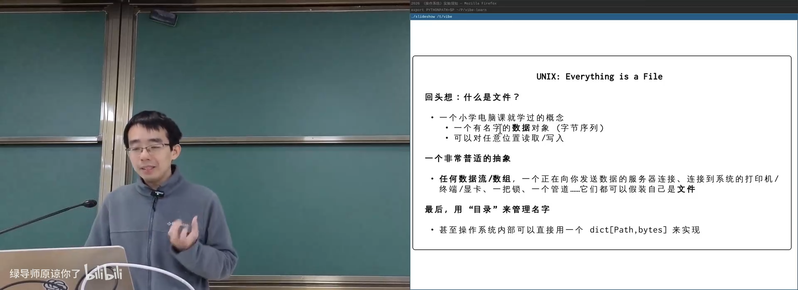
📷 文件抽象覆盖数据流、设备、进程与通信
回到原视频 (00:18:15)
4.3 文件系统可以构建信息系统
课程网站的在线评测系统本身就是一个例子：
/var/www/filerecv/OS2025/M1/<student>/<timestamp>.zip
提交完成后，后台评测程序监控目录，并生成：
<timestamp>.result
前端刷新页面时直接遍历目录树。
flowchart LR
W["Web 后端"] --> F["提交目录"]
F --> J["Online Judge 监控"]
J --> R["生成 .result"]
R --> U["前端遍历目录"]
文件系统的优点：
- 人类可以直接查看和修改；
- 命令行为工具可以组合；
- 重判只需删除
.result； - 不需要为每个操作写专用后台工具。
代价是缺少数据库那样的事务一致性保证。
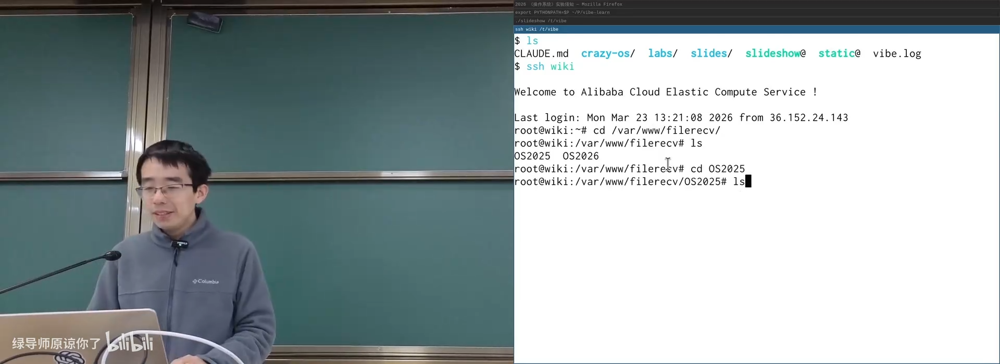
📷 课程 OJ 直接用文件系统组织提交和结果
回到原视频 (00:23:55)
例如重判所有提交，只需要删除旧结果：
find ... -name '*.result' -delete
评测器再次扫描时，会重新处理缺少结果的任务。
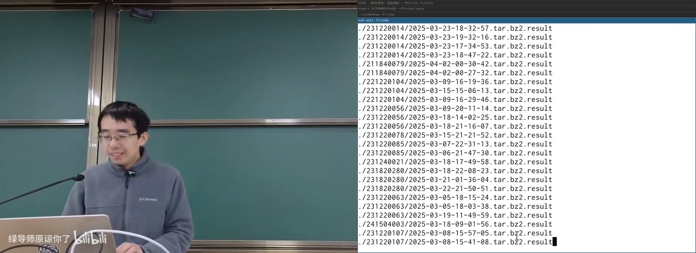
📷 用 find 删除结果文件触发批量重判
回到原视频 (00:26:39)
4.4 FHS
Linux 文件系统布局遵循 Filesystem Hierarchy Standard（FHS）：
/bin、/usr/bin；/etc；/home；/dev；/proc；/sys；/var；/tmp。
标准让用户和程序能够预测文件位置。macOS 虽然是 UNIX 系统，但并不完全遵循 Linux FHS。
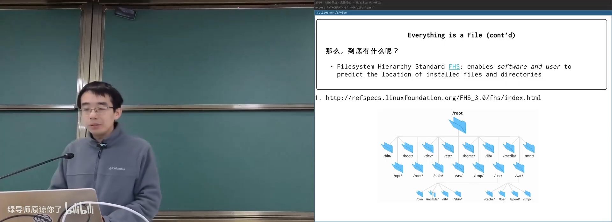
📷 Filesystem Hierarchy Standard 规定的目录结构
回到原视频 (00:30:47)
5. UNIX Philosophy：组合小工具
(参考时间: 00:33:08)
UNIX Philosophy 可以概括为：
- 每个程序只做一件事，并把它做好；
- 程序能够协同工作；
- 把文本流作为通用接口。
flowchart LR
E["一个工具的输出"] --> T["文本流"]
T --> P["管道"]
P --> I["另一个工具的输入"]
文本接口同时面向：
- 人类：容易查看、编辑和调试；
- 机器：容易解析和组合；
- Agent：容易进入语言模型上下文。
例如统计所有进程的 VmRSS：
grep -s VmRSS /proc/*[0-9]/status \
| awk '{sum += $2} END {print sum " kB"}'
这种“快速但不够严谨”的接口也有缺点，例如空格、引号和格式变化会让解析变得脆弱。AI 时代，Agent 可以生成更严格的程序或直接调用结构化 API。
但“小工具组合”和“统一数据接口”的思想仍然有巨大价值。
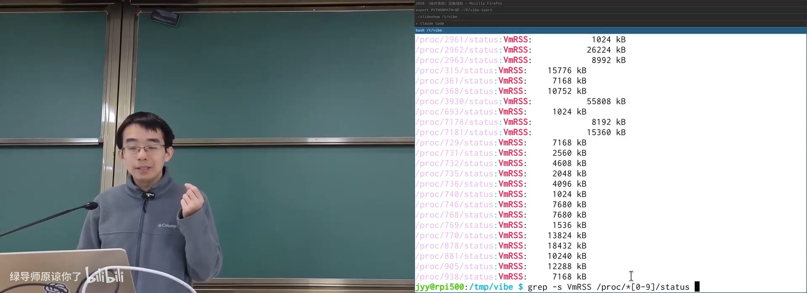
📷 UNIX 文本接口与管道组合
回到原视频 (00:36:40)
6. 文件在操作系统内部是什么
6.1 从 CrazyOS 理解文件对象
CrazyOS 中每个进程有输出缓冲区：
struct proc {
char buf[BUFSIZE];
size_t buf_len;
};
如果给它一个当前偏移：
struct FILE {
char *data;
size_t offset;
};
立即得到文件的最小模型：
open：分配struct FILE；close：释放struct FILE；read：从data + offset读取并推进 offset；write：写入并推进 offset；lseek：修改 offset；dup：创建指向同一文件对象的新引用。
flowchart LR
O["open"] --> F["struct FILE"]
F --> D["data buffer"]
F --> P["offset"]
R["read/write/lseek"] --> F
C["close"] --> F
U["dup"] --> F
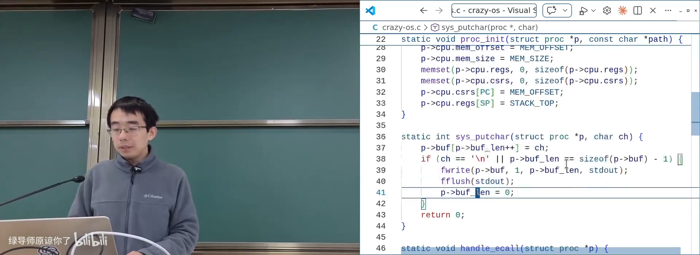
📷 CrazyOS 缓冲区与文件对象的关系
回到原视频 (00:43:06)
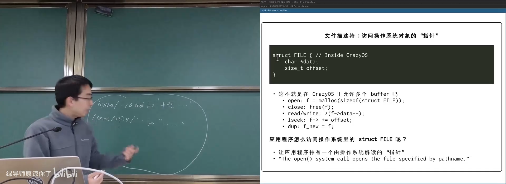
📷 文件对象由数据缓冲区和当前偏移组成
回到原视频 (00:45:19)
6.2 应用不能直接持有内核指针
struct FILE 位于内核地址空间，应用无法直接解引用。UNIX 使用一个整数间接引用对象：
文件描述符（File Descriptor）
文件描述符只对当前进程有意义，由操作系统负责解释。
flowchart LR
P["进程 FD 表"] --> D0["FD 0"]
P --> D1["FD 1"]
P --> D2["FD 2"]
P --> D3["FD 3"]
D0 --> K["内核对象"]
D1 --> K
D2 --> K
D3 --> K
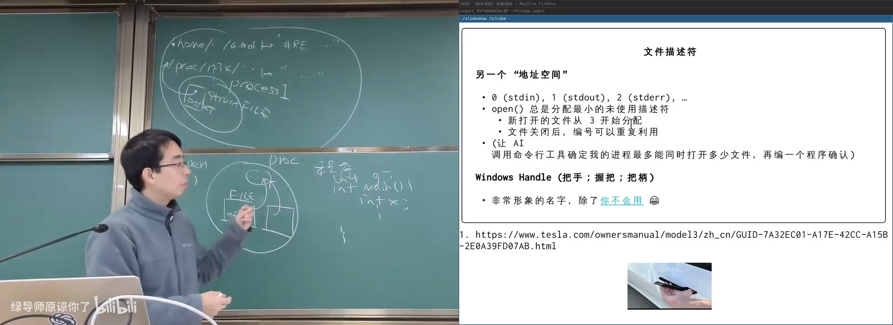
📷 文件描述符是应用程序访问内核对象的间接指针
回到原视频 (00:49:31)
6.3 三个标准描述符
进程启动时通常已有：
| FD | 名称 | 用途 |
|---|---|---|
| 0 | stdin | 标准输入 |
| 1 | stdout | 标准输出 |
| 2 | stderr | 标准错误 |
open 总是分配当前最小的未使用描述符。
例如：
- 0、1、2 已使用，则新文件获得 3；
- 关闭 FD 3 后再打开，新对象仍优先获得 3。
write(1, "hello\n", 6);
本质上是在向 FD 1 对应的内核对象写入字节。
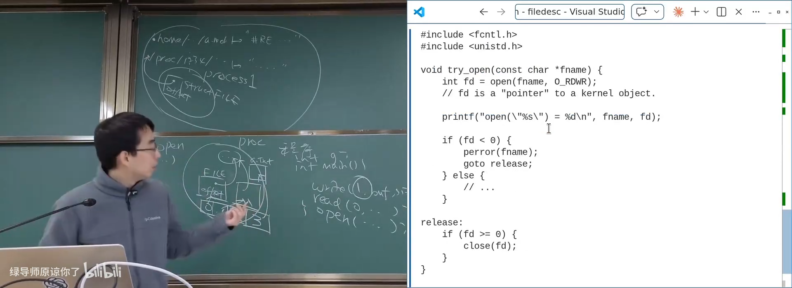
📷 0、1、2 是进程默认继承的标准描述符
回到原视频 (00:57:04)
6.4 Windows Handle
Windows 用 Handle 表示操作系统对象引用。Handle 更像带权限的“把柄”：
- 不仅包含对象标识；
- 也可能携带访问权限；
- 不同 Handle 可以指向不同对象或具有不同权限。
UNIX 文件描述符只是一个整数索引，权限语义更多保存在内核对象中。
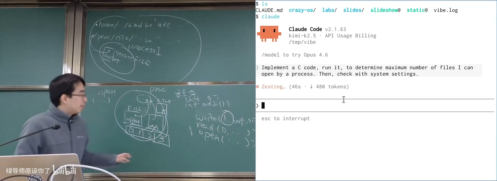
📷 Windows Handle 与 UNIX 文件描述符的差异
回到原视频 (00:53:45)
7. 文件描述符与 fork 的复杂交互
(参考时间: 01:01:24)
考虑：
int fd = open("log.txt", O_WRONLY);
write(fd, "1", 1);
fork();
write(fd, "2", 1);
问题是：最终文件里应该有几个 2？
flowchart TD
O["打开 log.txt<br/>FD=3，offset=0"] --> W1["写入 1<br/>offset=1"]
W1 --> F["fork"]
F --> P["父进程 FD=3"]
F --> C["子进程 FD=3"]
P --> W2["父进程写入 2"]
C --> W3["子进程写入 2"]
有两种可能设计：
深复制
父子进程拥有独立 offset，最终文件可能为：
12
双方从同一位置覆盖写入。
浅复制
父子进程共享打开文件对象和 offset：
122
两次写入顺序追加。
UNIX 选择浅复制。父子进程共享 offset，因此日志或追加型文件不会轻易互相覆盖。如果要获得独立 offset，可以再次 open 文件。
flowchart LR
P["父 FD"] --> O["共享 open file description"]
C["子 FD"] --> O
O --> F["文件"]
O --> S["共享 offset"]
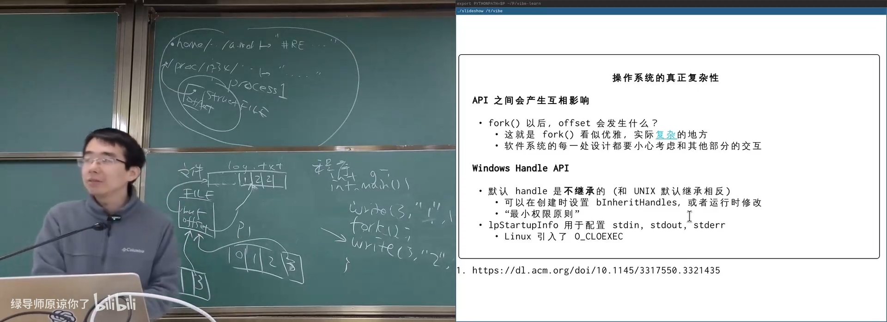
📷 fork 后父子进程共享文件对象和 offset
回到原视频 (01:04:15)
这种默认继承带来安全风险：父进程打开敏感文件后若忘记关闭，子进程通过 execve 执行的其他程序也可能继承该 FD。
解决方案：
open(path, O_CLOEXEC);
让描述符在 execve 时自动关闭，更接近“最小权限原则”。
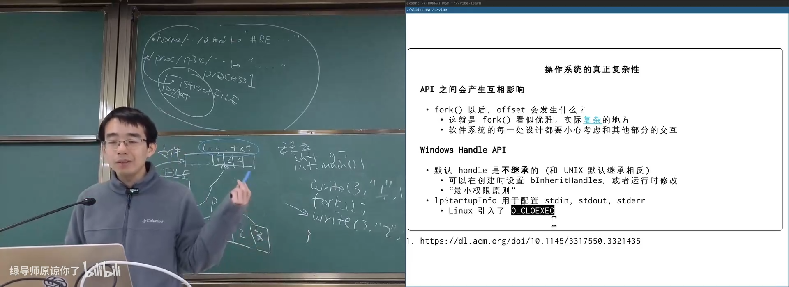
📷 O_CLOEXEC 避免文件描述符泄漏给新程序
回到原视频 (01:06:35)
8. 看看系统里到底打开了什么
/proc/<pid>/fd/ 把每个进程的文件描述符映射为符号链接：
ls -l /proc/*/fd/* 2>/dev/null
可以看到：
/dev/pts/...：伪终端；/dev/tty...：控制台；/dev/null：空设备；- GPU 渲染设备；
- 输入设备；
- pipe；
- socket。
flowchart LR
P["进程 PID"] --> FD["/proc/PID/fd"]
FD --> N["FD 0 / 1 / 2 / ..."]
N --> O["对应的内核对象"]
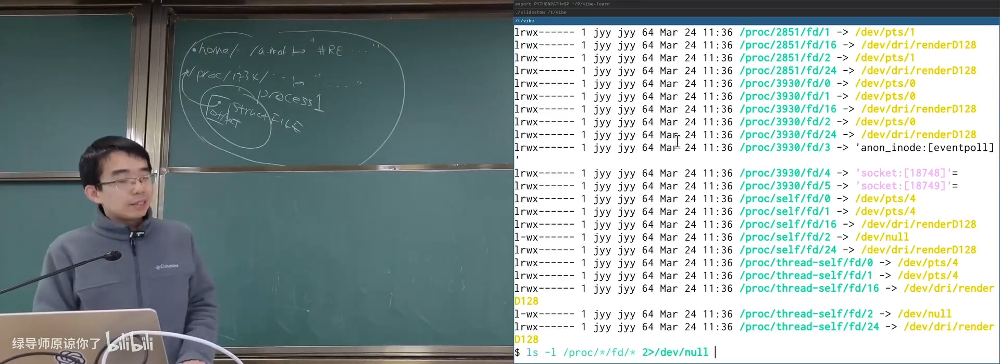
📷 通过 procfs 查看所有进程打开的文件
回到原视频 (01:07:46)
只要权限允许，还可以直接向终端设备写数据：
echo hello > /dev/pts/5
对应终端会立即显示内容。这说明 Everything is a File 不只是概念，而是可以真实操作的接口。
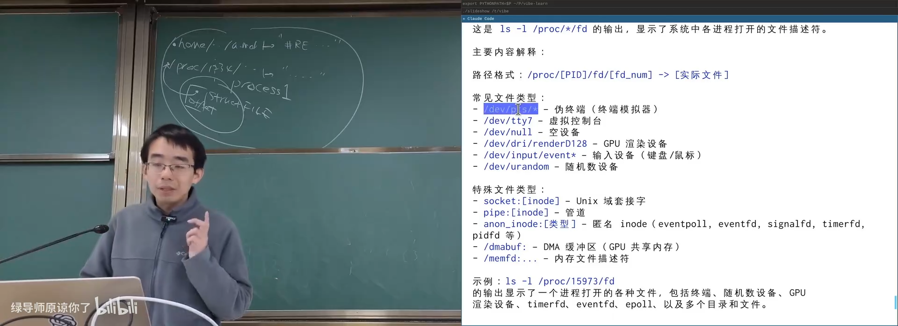
📷 向另一个伪终端写入数据
回到原视频 (01:10:13)
9. 管道：进程间的字节流
9.1 匿名管道
int pipe(int pipefd[2]);
系统会创建一个匿名管道对象，并返回两个文件描述符：
pipefd[0]：读端；pipefd[1]：写端。
flowchart LR
W["写端 FD"] --> P["Pipe 缓冲区"]
P --> R["读端 FD"]
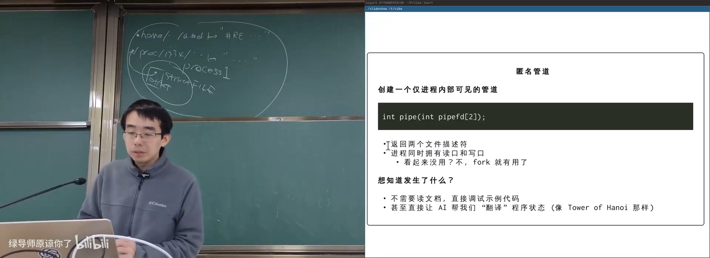
📷 匿名管道提供读端和写端两个文件描述符
回到原视频 (01:11:51)
管道具有阻塞行为：
- 管道为空时，
read会等待； - 管道已满时，
write会等待； - 写端全部关闭后，读取会得到 EOF。
sequenceDiagram
participant W as 写进程
participant P as Pipe
participant R as 读进程
R->>P: read，空管道
Note over R: 阻塞等待
W->>P: write("hello")
P-->>R: 返回 "hello"
R->>R: 继续运行
9.2 命名管道 FIFO
如果不同时具有亲缘关系的进程也要通过管道通信，可以创建命名管道：
mkfifo /tmp/my.pipe
mkfifo("/tmp/my.pipe", 0666);
它在文件系统中有一个名字，但行为仍是管道：
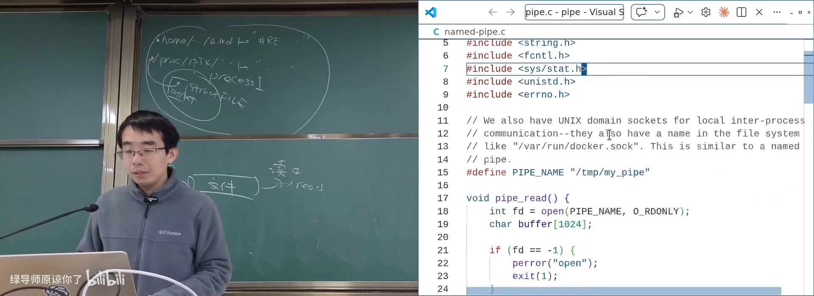
📷 命名管道在目录中显示为 FIFO
回到原视频 (01:14:00)
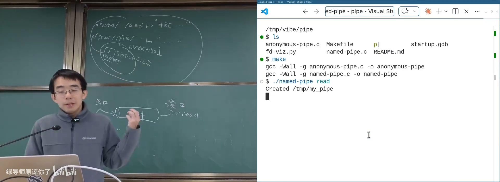
📷 命名管道的读端等待写端产生数据
回到原视频 (01:15:12)
9.3 Shell 管道如何工作
Shell 中的：
ls | wc -l
大致流程：
- Shell 创建匿名管道；
fork出两个子进程；- 左进程关闭写端，把 stdout 指向管道写端；
- 右进程关闭写端，把 stdin 指向管道读端；
execve分别执行ls和wc。
flowchart LR
S["Shell"] --> P["pipe()"]
P --> L["fork + dup2<br/>stdout -> 写端"]
P --> R["fork + dup2<br/>stdin -> 读端"]
L --> LS["execve(ls)"]
R --> WC["execve(wc)"]
课堂使用 AI 生成工具，自动读取 /proc/<pid>/fd 并绘制进程、FD 与管道之间的 Mermaid 关系图。
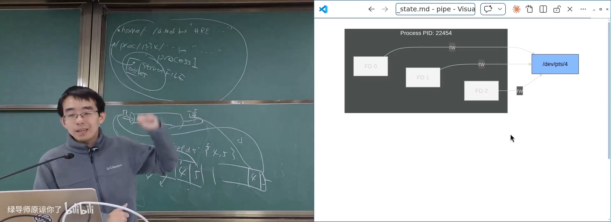
📷 自动可视化父子进程与管道文件描述符
回到原视频 (01:21:28)
10. TestKit：用进程运行测试
(参考时间: 01:27:03)
课程 TestKit 使用 fork 为每个测试用例创建子进程：
- 父进程注册测试；
- 每个测试在独立子进程中运行；
- 子进程崩溃或
assert失败不会杀死整个测试进程； - 使用共享内存或管道收集子进程输出；
- 设置超时，检测死循环；
- 父进程汇总通过和失败结果。
flowchart TD
P["TestKit 主进程"] --> T1["fork 测试 1"]
P --> T2["fork 测试 2"]
P --> T3["fork 测试 3"]
T1 --> R["收集结果"]
T2 --> R
T3 --> R
R --> S["汇总 PASS / FAIL"]
这正是此前学过的进程、地址空间、文件和管道 API 的综合应用。
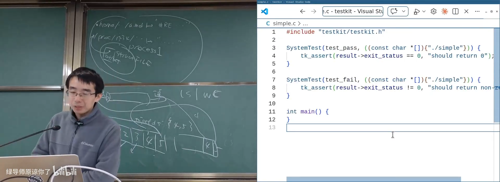
📷 TestKit 在子进程中运行每个测试并汇总结果
回到原视频 (01:27:03)
11. 本讲总结
mindmap
root((访问操作系统对象))
Everything is a File
字节序列
有名字对象
数据流
设备
procfs / devfs
socket / pipe
UNIX Philosophy
Do one thing well
Work together
Text stream interface
Tool composition
UNIX 文件模型
struct FILE
buffer + offset
open / close
read / write / lseek / dup
文件描述符
FD 0/1/2
最小未使用编号
Fork 共享 offset
O_CLOEXEC
Windows Handle
procfs
/proc/PID/fd
查看打开对象
/dev/pts
管道
pipe()
读端 / 写端
阻塞与容量
FIFO
shell 管线
TestKit
fork 子进程
崩溃隔离
超时
结果汇总
核心结论：
- 操作系统对象包括文件、设备、管道、套接字、进程等多种资源。
- UNIX 用统一文件抽象复用 open/read/write/lseek/close。
- Windows 更倾向提供对象专用 API 和 Handle。
- 文件可表示数据流、数组、设备和进程状态。
- 文件系统可以构建包括在线评测在内的大量信息系统。
- 文件在最小模型中由数据缓冲区和 offset 组成。
- 文件描述符是用户态访问内核对象的整数指针。
- 0、1、2 分别对应 stdin、stdout、stderr。
open返回最小未使用的文件描述符。fork后父子进程共享打开文件对象和 offset。O_CLOEXEC防止敏感文件描述符泄漏给execve后的程序。- 管道是带阻塞语义和有限容量的内核字节缓冲区。
- Shell 管道本质上是
pipe + fork + dup2 + execve。 - TestKit 展示了进程、文件描述符、管道与共享内存的综合应用。
UNIX 的核心设计不是拥有最多专用 API，
而是用少量通用机制组合出几乎无限的应用。
附：官方参考与延伸阅读
课程与讲义：
课程演示：
规范与资料：
阅读材料：
- Operating Systems: Three Easy Pieces
- 第 39 章：Files and Directories。
man 2 openman 2 closeman 2 readman 2 writeman 2 lseekman 2 dupman 2 pipeman 3 mkfifoman 5 proc
版权说明：课程讲义与幻灯片的著作权归蒋炎岩所有，采用 Creative Commons BY-NC 4.0 许可。电子书正文为课堂内容的书面化重构，脚本占位符已替换为视频画面或官方资料渲染图；引用与来源链接均保留在本页。